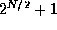
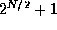

Directory Contents
The Fast Fourier Transform (FFT) over the field of complex
numbers[] is a common signal processing applications with
inherent parallelism. An FFT of size N can be performed in hardware
in a loop of length  where each iteration of the loop permits
N/2 computations to run in parallel. Further, the loop of length
can be unrolled into a butterfly network and pipelined by
overlapping the successive iterations. Our hardware version employs a
number theoretic version of the FFT which operates in the ring of
integers modulo . This differs from the complex FFT since
arithmetic operations take place in a ring of integers. The basic FFT
structure, including the inherent parallelism of the algorithm, is
the same for both the complex and number theoretic cases. Note that
the FFT data width is N/2+1 bits.
where each iteration of the loop permits
N/2 computations to run in parallel. Further, the loop of length
can be unrolled into a butterfly network and pipelined by
overlapping the successive iterations. Our hardware version employs a
number theoretic version of the FFT which operates in the ring of
integers modulo . This differs from the complex FFT since
arithmetic operations take place in a ring of integers. The basic FFT
structure, including the inherent parallelism of the algorithm, is
the same for both the complex and number theoretic cases. Note that
the FFT data width is N/2+1 bits.